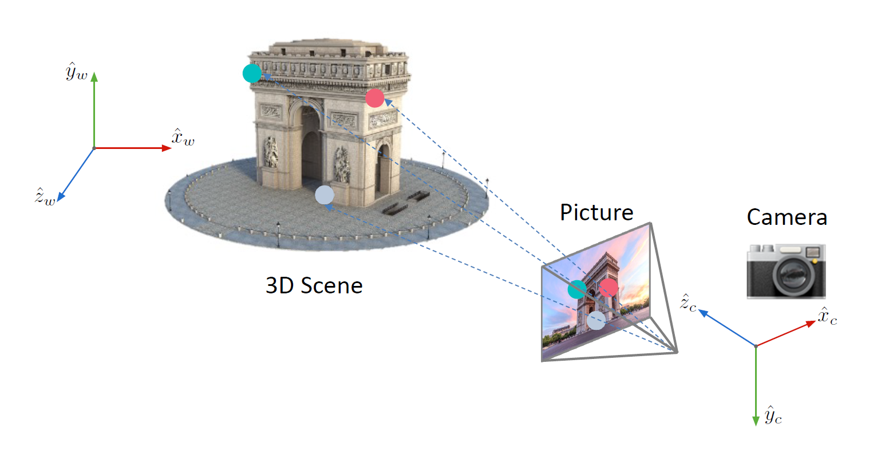
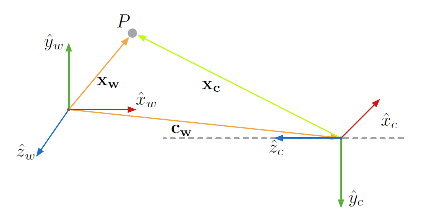
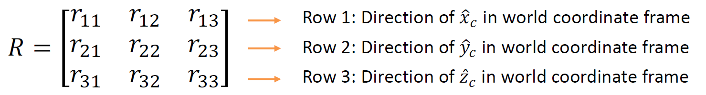
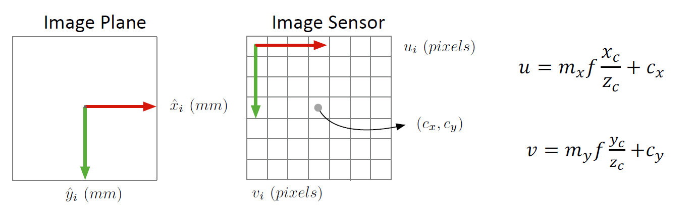
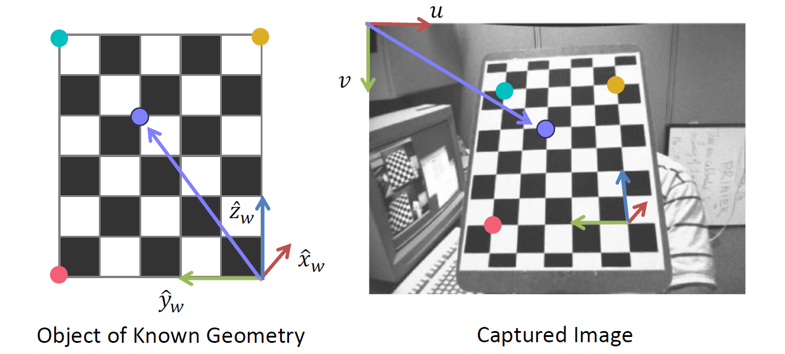
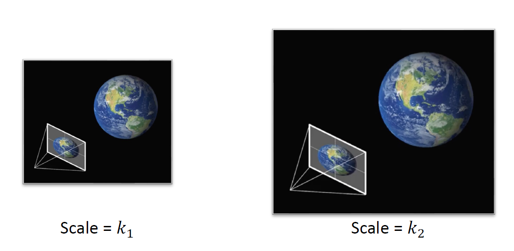
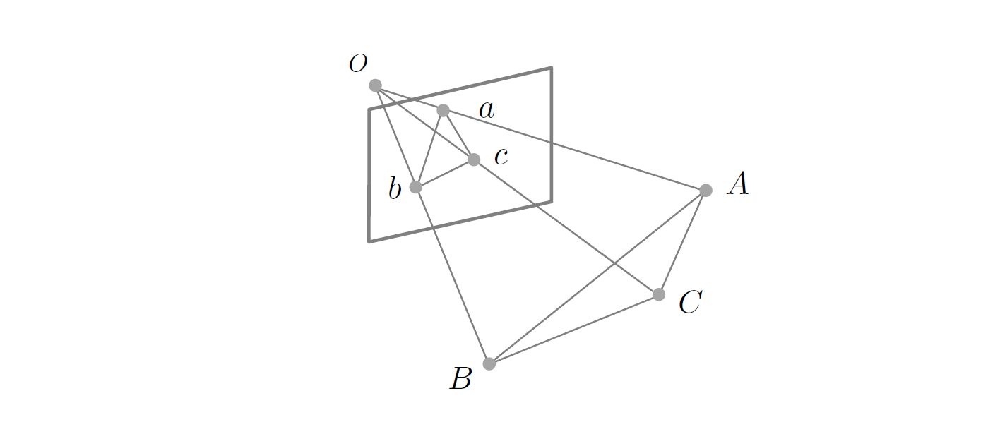
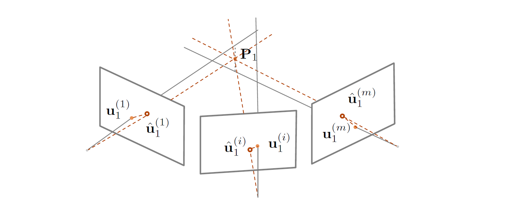

05 Structure from Motion
约 3984 个字 预计阅读时间 13 分钟
从这里开始，我们的任务就是从运动中还原结构。这个过程就被称为 运动恢复结构（Structure from Motion, SfM）。这里提到的 motion 是相机的运动。使用相机从各个角度拍摄图像，我们希望计算出这些图像拍摄时相机在三维空间中的位置和朝向，或者称之为相机的位姿。
相关的问题主要有几种拓展。一方面是多视图立体匹配（Multi-view Stereo, MVS），它帮助我们构建一种稠密点云；一方面是视觉定位（Visual Localization），它要求我们定位拍照的范围。另一个重要应用是实时定位与映射（Simultaneous Localization and Mapping, SLAM），它要求实时完成重建和定位。
在这个问题上，我们需要明确几个问题： 1. 相机怎么将三维的点映射到二维平面（相机模型） 2. 如何计算相机的位置和方向（相机标定和位姿估计） 3. 如何重建未知的三维模型 接下来我们注意考察这些方面。
相机模型（camera model）¶
我们知道，在图像形成过程中，我们把相机放在某个位置，然后按下快门，通过光电转换来实现最后的成像，如下图：

在这个过程中，每一步都发生了一个变换： 1. 将世界坐标系转换到世界坐标系； 2. 投影到图像平面； 3. 图像平面上的物理坐标往像素坐标的映射。 这三步构成了一个完整的相机模型。第一个变换对应的矩阵被称为外参矩阵（extrinsic matrix），它只与相机的位姿有关；第二第三个变换对应的矩阵被称为内参矩阵（intrinsic matrix），它只与相机的内部参数有关。
第一步是一个坐标系的转换。我们首先需要知道相机在世界坐标系中的位置与朝向，我们将前者用一个向量 \(c_w\) 表示，将后者用一个旋转矩阵 \(R\) 表示，它们被统称为外参（extrinsic parameters），如下图：

这个三维空间中的旋转矩阵的概念如下图：

当然，它也是一个正交矩阵，也就是说，\(R^TR=I\)。于是，我们得到的变换就是：
其中 \(t = -Rc_w\)。
在齐次坐标系下，它就可以被表达成一个线性的形式，记：
称为外参矩阵（extrinsic matrix），我们就有：
投影矩阵我们已经知道了：
其中 \(\hat x_c\) 为最后一维被归一化的齐次坐标。
在第三步中，我们需要注意一次平移操作，将图像中心平移，如下图：

在齐次坐标系中，我们就有内参矩阵：
其中 \(f_x = m_x f\)，\(f_y = m_y f\)，它们可以被理解为以像素计算的焦距。
综合上面两个矩阵，我们就能获得：
这时我们就得到了一个完整的相机模型。比起最开始的相机模型，它只是增加了一些更加细节的参数。我们的下一个问题是，怎么获得这些所需的参数？这时我们就需要用到相机标定（camera calibration）技术。
相机标定（camera calibration）¶
当然，我们的内参可以是已知的，也就是相机的出厂参数，但是，这个参数可能并不标准。但是，外参一定是未知的，必须从图像去反求出来，这个过程就称为相机标定。
在相机标定的过程中，我们首先假定我们拍摄的物体结构是已知的。例如，使用一块标定板（calibration board），如下图：

通过这样一块标定板上的点和图像坐标系之间的映射，就可以求出相机的内外参矩阵。
对于每个匹配点，我们都有：
然后将其展开成线性方程：
重排之后得到：
也就是要解一个方程
但是，稍等，我们发现这玩意是多解的！从齐次坐标系的角度，乘以一个系数并不会改变投影的结果，也就是说，所有 \(kP\) 和 \(P\) 得出的结果都是等价的，我们说，这个 \(P\) 是 defined only up to a scale，因此，我们还需要添加额外的约束。这个问题也可以形象地描述，同时对相机坐标系和世界坐标系进行拉伸不会影响结果，如图：

那么，添加什么约束呢？我们可以令 \(p_{34} = 1\)，也可以令 \(\Vert p \Vert^2 = 1\)，这样都能起到好的效果，而后者往往是更常用的。因此，我们就可以把求解转化成一个优化问题：
通过简单的奇异值分解，我们可以证明，\(p\) 就是矩阵 \(A^TA\) 的最小特征值对应的特征向量时，这个条件可以被满足。然后我们将 \(p\) 重排一下，得到所需的矩阵 \(P\)。
接下来，我们需要将 \(P\) 解耦合成内参矩阵和外参矩阵，注意到，我们的矩阵可以表达成：
也就是说，我们把一个方阵分解成了一个上三角矩阵和一个正规矩阵。这也就是一个 QR 分解（QR factorization），这样得到的结果总是唯一的。
然后，我们求解平移，得到的结果就是：
当然，我们相机镜头可能会引起径向和切向的畸变，这些畸变会反映在相机的内参中，在这里则已经被我们忽略了。通过同时优化这些畸变的参数，我们也可以在标定的过程中相应得到这些参数，这样会让问题变得更加复杂，但是方法是类似的。
视觉定位（visual localization）¶
我们知道，在视觉定位的过程中，我们的三维模型是一致的，因此，我们只需要使用类似的方法完成相机的定位就可以了。但是，我们的对应点并没有那么好求解，因此，我们首先需要求解三维到二维的对应关系，我们同样也使用特征匹配的方法。因为三维模型往往是从二维图像重建出来的，我们往往都有对应的二维图像。通过对数据库图像的匹配，就能得到三维到二维的对应关系。
接下来，我们就需要求解相机的外参。这时我们的相机内参往往是已知的，这个问题被称为定位问题，它与相机标定的差异就是相机内参已知。对于这样的问题，我们称为 Perspective n-Point 问题，简称 PnP 问题。这是一个纯粹的几何问题。
当然，我们的未知参数事实上是六个：三个旋转参数、三个平移参数，因此，我们通常称之为 6 个自由度的（6 Degrees of Freedom, 6DoF）位姿估计问题。原则上讲，只需要三对点就可以完成定位操作，但实践上，三对点是不够的。
当然，最简单的解法就是完全类比相机标定过程，求解投影矩阵。这个操作被称为直接线性映射方法（direct linear transform, DLT），这种方法事实上不常用，因为它浪费了已知的内参，也要求了更多的对应点。
另一种直观的方法当然就是 P3P，通过三个点来求解变换关系，也就是说，我们需要求下图中 \(OA, OB, OC\) 的长度。

那么，我们开始列方程。我们知道余弦定理：
然后两边同时除 \(OC^2\)，记 \(x = \dfrac{OA}{OC}, y = \dfrac{OB}{OC}\)，得到：
其中 \(v = \dfrac{AB^2}{OC^2}, u = \dfrac{BC^2}{AB^2}, w = \dfrac{AC^2}{AB^2}\)
然后把 \(v\) 消掉，得到的最终结果是：
这是一个二元二次方程组，很容易看出，它事实上有四组解。因此，我们还需要一个额外的点来确定最为可能的一组解是什么。
当然，为了处理错误匹配，我们可以使用 RANSAC 配合 P3P 来求解。
更一般地，我们可以把 PnP 问题写成优化问题，最小化重投影误差（reprojection error），也就是说：
用 P3P 求解的结果作为初值，然后用 Gauss-Newton 法去进一步求解。注意，\(R\) 要用三个自由度去表示，这样才能保证它的正规性约束。当然，还有一些加速算法来加快这个过程。
另一个与之相关的问题就是物体位姿估计（object pose estimation），我们要求算的就是物体在相机坐标系下的位姿，这个过程与上面提到的求解问题是完全等价的。
运动恢复结构（structure from motion）¶
直到现在，我们已经有了相机的内参。我们的步骤还是类似的： 1. 找到点到点之间的对应关系； 2. 求解两张图片之间相机之间相对的位姿； 3. 通过三角化（triangulation）找到三维点云。
当然，相对位姿的求解是一个比较麻烦的问题，我们重点来处理这个问题。也就是说，我们要探究的就是两张图像之间对应点的几何关系，这个关系由对极几何（epipolat geometry）来描述。它的基本设定如下图：

在这里，我们需要界定一些概念。极点（epipole）是一个相机在另一个相机中的投影平面中的像点，也就是上图中的 \(e_l\) 和 \(e_r\)，它们的连线被称为基线（baseline），两个相机和场景中的点 \(P\) 构成的平面被称为极平面（epipolar plane），为了描述 \(u_l\) 和 \(u_r\) 的关系，我们需要引入极线约束（epipolar constraint），在这里，我们给出一种推导方式。
首先，我们引入极平面的法向量 \(\boldsymbol n = \boldsymbol t \times \boldsymbol x_l\) ，我们知道：
也就是说：
其中：
而我们又知道两个相机之间的关系：
我们将这个式子带入到上面的方程中，得到：
展开：
注意到 \(T_\times \boldsymbol t = t\times t = 0\)，我们有：
于是我们记 \(E = T_\times R\)，称其为本质矩阵（essential matrix），它也就是平移向量对应的矩阵和旋转矩阵的乘积，它取决于我们的相机之间的相对位姿。而通过奇异值分解，我们可以从 \(E\) 分解出平移矩阵和旋转矩阵。
接下来，我们研究怎么求到本质矩阵 \(E\)。如果我知道 \(\boldsymbol x_l\) 和 \(\boldsymbol x_r\)，那么我们就能知道 \(E\)。但是，我们知道在图像坐标系中的对应点。对于左边的相机，我们有：
也就是说：
右侧同理，我们就有：
记 \(F = (K_l^{-1})^TEK_r^{-1}\) 为基础矩阵（fundamental matrix），当然，它也是 defined up to scale 的，因此，我们同样加上约束条件 \(\Vert F \Vert^2 = 1\)。因此，我们用类似的方式求解一个方程 \(Af=0\) 即可得到基础矩阵的值。注意，这里每一对点只能给出一个方程，因此，我们至少需要八对点才能得到这样的解。
接下来，我们就可以顺理成章地获得 \(E, T, R\)，进而得到相机之间相对的平移与旋转。下一步就是进行三角化了。这时我们只需要求两个射线的交点，同样通过求解方程组的方式来实现。
但是这是最理想的情况。我们会注意到，这个方程组不一定有解，因为两条射线不一定有交点。因此，我们使用最小二乘解，或者使用最小化重投影误差的方法来处理：
接下来，我们把两张图的情形推广到多张图上去。我们随常用的方法就是序贯式的求解方法（sequential SfM）。对于每张新的图，我们首先进行视觉定位，然后计算出新的三维点，重新优化已知的三维点中在这张图片中能够被看到的点。最后，因为存在累计误差，而且我们估计出的点都是两点处理的，所以我们需要进行一次集束调整（bundle adjustment）的操作。这时，我们使用的思路仍然是最小化重投影误差：
如图：

我们在这一步做的就是对每个点、每个相机位置，都进行重投影，然后优化总的误差，当然，这又是一个非线性的优化问题，可以用 Levenberg-Marquardt 之类的算法进行求解。